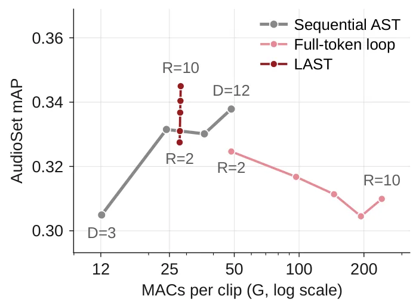
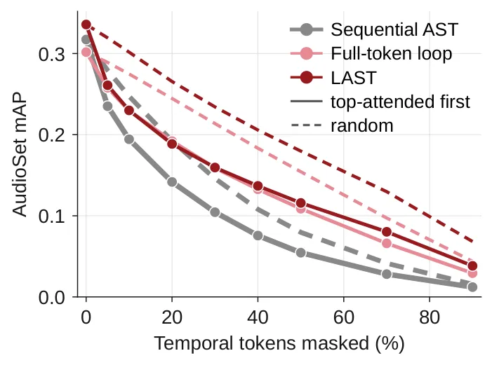
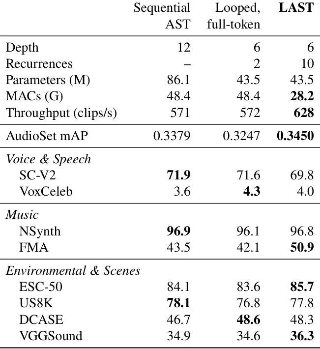

O problema: profundidade custa caro
Transformers de áudio funcionam convertendo espectrogramas em centenas de tokens e integrando informação temporal ao longo de camadas sucessivas até produzir uma representação de classe que alimenta o classificador. Aumentar a profundidade — adicionar mais camadas — melhora o desempenho, mas cada camada nova traz novos parâmetros, mais operações de multiplicação-acumulação (MACs) e maior custo computacional.
O Audio Spectrogram Transformer (AST) segue essa arquitetura sequencial: cada camada processa todos os tokens uma vez e passa o resultado adiante. Para melhorar a precisão, você precisa empilhar mais blocos. O modelo de 12 camadas alcança 0,3379 de mean average precision (mAP) no AudioSet, mas usa 86,1 milhões de parâmetros e 48,4 GMACs por clipe. É eficaz, mas ineficiente.
Os autores partem de uma observação biológica: o sistema auditivo humano resolve integração temporal com processamento recorrente, reutilizando os mesmos neurônios. A pergunta que orienta o paper é: podemos obter os benefícios de profundidade adicional sem aumentar o número de parâmetros, aplicando recorrência em vez de empilhar camadas distintas?
A ideia: recorrência focada no token de classe
A resposta é o LAST (Looped Audio Spectrogram Transformer), que combina duas estratégias. Primeiro, reutiliza os mesmos blocos de transformer em múltiplas passadas (recorrência), aumentando a profundidade efetiva sem adicionar parâmetros. Segundo, e mais importante, aplica essa recorrência de forma assimétrica: processa todos os tokens do espectrograma na primeira passada, depois congela as representações de áudio e refina apenas o token de classe (CLS) nas passadas seguintes.
Essa escolha vem de uma observação empírica: as representações dos tokens de áudio tendem a estabilizar mais rápido que a do token de classe ao longo das passadas recorrentes. Se as features de áudio já foram computadas de forma informativa, faz mais sentido dedicar processamento adicional a integrar essas features pré-computadas do que recalculá-las repetidamente.
O LAST se diferencia de trabalhos anteriores. O Perceiver aplica cross-attention iterativa entre um array latente e entradas brutas de imagem ou áudio. LARM usa recorrência em reconhecimento de fala, mas atualiza todos os tokens a cada passada. O CaiT também refina um token de classe sobre features fixas, mas usa camadas de atenção separadas que exigem novos parâmetros. O LAST reutiliza os blocos do próprio encoder, sem adicionar parâmetros.

Como funciona: passadas completas e passadas baratas
O encoder recebe N tokens de espectrograma log-Mel e um token de classe aprendido, todos de largura C. Um AST sequencial aplica D blocos distintos uma vez. Um encoder recorrente reutiliza os mesmos D blocos por R passadas, resultando em D×R aplicações de blocos a partir de D conjuntos de pesos. O número de parâmetros é fixado por D, mas sob recorrência ingênua (full-token) todos os tokens são atualizados a cada passada e o custo computacional escala linearmente com R.
O LAST quebra essa simetria. Na primeira passada, todos os tokens são processados normalmente: cada bloco aplica atenção completa e a rede feed-forward (MLP) a todos os N+1 tokens. A partir da segunda passada, os tokens de áudio são congelados. Cada bloco calcula as chaves (keys) e valores (values) dos tokens de áudio uma vez na segunda passada e os armazena em cache para reutilização. Nas passadas subsequentes, apenas o token de classe é atualizado: a atenção e o MLP operam somente sobre ele, usando as chaves e valores cacheados.
Essa assimetria muda radicalmente o custo. Uma passada completa custa O(D(NC² + N²C)), onde o termo quadrático em N domina para espectrogramas longos. Uma passada de classe cacheada custa O(D(C² + NC)): o termo quadrático em N desaparece e a projeção se reduz a uma única query. A profundidade efetiva cresce com R a custo quase constante. O treinamento permanece end-to-end: gradientes alcançam a primeira passada através das features de áudio fixas.
Resultados: mais precisão, menos custo
Os autores treinaram três famílias de modelos sob receita idêntica no AudioSet: AST sequencial com D ∈ {3, 6, 9, 12} camadas, e duas variantes recorrentes com D=6 blocos compartilhados e R ∈ {2, 4, 6, 8, 10} passadas — uma atualizando todos os tokens (full-token), outra apenas o token de classe (LAST).
Aumentar profundidade sequencial funciona, mas é caro. De D=3 para D=12, o mAP sobe de 0,3049 para 0,3379, mas os parâmetros crescem de 22,3M para 86,1M e a computação de 12,1 para 48,4 GMACs. Contra o baseline sequencial D=6 (mesma contagem de parâmetros), o LAST vence a partir de R≥6, e seu mAP sobe a cada passada testada: de 0,3275 em R=2 para 0,3450 em R=10.
Com R=10, o LAST atinge 0,3450 de mAP contra 0,3379 do sequencial D=12 — melhoria relativa de 2,1% — com 49,4% menos parâmetros, 42% menos MACs e throughput medido 9,8% maior. A vantagem depende de como a recorrência é aplicada: full-token recurrence com os mesmos seis blocos cai de 0,3247 mAP em R=2 para 0,3099 em R=10, apesar de quintuplicar a computação. A vantagem do LAST sobre full-token cresce de 0,0028 mAP em R=2 para 0,0350 em R=10, onde full-token requer aproximadamente 8 vezes mais MACs.

Robustez: mascaramento temporal e corrupções
Precisão em condições limpas mede apenas o cenário ideal. Se as passadas adicionais realmente integram evidência distribuída ao longo do clipe, em vez de apenas afiar a dependência de poucos frames salientes, a representação deveria degradar de forma mais suave quando essa evidência é removida ou distorcida. Os autores testam isso em duas direções: mascaramento temporal remove informação, e corrupções de forma de onda a alteram mantendo a entrada completa.
No mascaramento temporal, frames do espectrograma normalizado são progressivamente zerados, seja selecionando regiões por atenção decrescente do token de classe, seja uniformemente ao acaso. O LAST retém mais precisão que o AST sequencial sob ambos os regimes. Sob mascaramento por atenção, o LAST (D=6, R=10) mantém 0,2885 de mAP com 50% dos frames mascarados, contra 0,2654 do sequencial D=12. Sob mascaramento aleatório, o LAST mantém 0,2947 versus 0,2821 do sequencial na mesma condição.
Nas corrupções de forma de onda, o LAST melhora desempenho em todas as doze famílias testadas: deslocamento temporal, mudança de velocidade, estiramento temporal, ganho, clipping, reverberação, filtros passa-alta e passa-baixa, pitch shift, e ruídos branco, rosa e marrom. Cada ponto é a média sobre configurações dentro de uma família; a linha tracejada é a média entre as doze. A margem do LAST sobre o AST sequencial nas corrupções excede a diferença entre os dois modelos em áudio limpo.

Transferência: features congeladas em oito tarefas
Para avaliar se as features aprendidas generalizam, os autores congelaram os encoders treinados e usaram apenas um classificador linear em oito tarefas de áudio: Speech Commands V2 (SC-V2) e VoxCeleb (voz), NSynth e FMA (música), ESC-50, UrbanSound8K (US8K), DCASE e VGGSound (ambientais e eventos).
O LAST (D=6, R=10) superou o sequencial D=12 em cinco das oito tarefas, com metade dos parâmetros. Em FMA (música), o LAST alcançou 50,9% de acurácia contra 43,5% do sequencial — ganho de 7,4 pontos percentuais. Em ESC-50 (sons ambientais), 85,7% versus 84,1%. Em VGGSound (eventos), 36,3% versus 34,9%. Em NSynth (instrumentos), 96,8% versus 96,9%, praticamente empatados.
O full-token recurrence (D=6, R=2) teve desempenho geralmente inferior ao LAST e ao sequencial, reforçando que a vantagem não vem apenas de recorrência, mas de como ela é aplicada. Vale notar que cada ponto na Figura 1 é um modelo treinado separadamente; esses resultados não estabelecem se um modelo já treinado se beneficia de passadas adicionais em tempo de inferência.

O que fica em aberto
O LAST demonstra que recorrência focada no token de classe é mais eficiente e eficaz que recorrência em todos os tokens ou que empilhar camadas distintas, pelo menos no AudioSet e sob a receita de treinamento testada. Mas várias questões permanecem abertas.
Primeiro, o paper não explora se um modelo LAST treinado com R pequeno pode ser usado em inferência com R maior sem retreinamento. Isso seria valioso para ajustar o trade-off precisão-latência em tempo de deploy. Segundo, todos os experimentos usam D=6 blocos compartilhados para os modelos recorrentes; não sabemos como a escolha de D interage com R, ou se existe um ponto ótimo.
Terceiro, o mascaramento temporal e as corrupções de forma de onda testam robustez, mas não cobrem todos os tipos de distribuição shift relevantes em aplicações reais — por exemplo, mudanças de domínio acústico (microfone, sala) ou classes fora da distribuição de treinamento. Quarto, o paper se concentra em classificação de clipes; não está claro se a mesma estratégia beneficia tarefas de predição densa no tempo, como separação de fontes ou transcrição.
Finalmente, o custo assimétrico do LAST depende de cachear chaves e valores, o que consome memória. Para clipes muito longos ou lotes grandes, o overhead de memória pode se tornar um gargalo, mesmo que o custo de computação permaneça baixo. O paper não quantifica esse trade-off memória-computação em diferentes regimes de uso.
O que fica
- LAST processa o áudio uma vez e depois refina só o token de classe em múltiplas passadas, aumentando profundidade efetiva a custo quase constante.
- Com 10 passadas, LAST supera AST sequencial de 12 camadas em 2,1% no AudioSet, usando metade dos parâmetros e 42% menos operações.
- LAST é mais robusto a mascaramento temporal e corrupções de áudio, e suas features transferem melhor para tarefas de música, fala e sons ambientais.
- Cada configuração foi treinada separadamente; não sabemos se aumentar passadas em inferência funciona sem retreinar o modelo.
Paper original: LAST: Looped Audio Spectrogram Transformer
Comentários
Nenhum comentário ainda. Seja o primeiro.